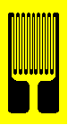

Circuits Refinements command
A-Pattern resistors are used exclusively for span shift with temperature change compensation. Of the same basic metal foil construction as strain gages, these resistors respond to temperature in the same manner as bonded foil strain gages. The result is that these foil resistors track the surface temperature of the transducer more closely than do wire resistors.

Unlike B-, C-, and D-Pattern resistors, A-Pattern resistors are supplied preadjusted. Since no cutting or shorting of foil conductors is required to achieve the required resistance value, A-Pattern resistors save labor time during transducer fabrication. However, since no adjustment is possible, these resistors must be ordered to a specific value, as calculated by TransCalc from the results of tests on uncompensated load cells. When any uncertainty is present, a B-, C-, or D-Pattern resistor can be substituted until the optimum resistance is determined. Then suitable A-Pattern resistors of that value can be ordered for production installations.